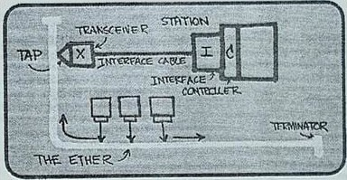

Períodos entre 1980 - 1990

No final da década de 70 aproximadamente 200 máquinas estavam
conectadas a ARPAnet não só devido a pesquisas, mas também por
ser utilizada para comunicação militar na Guerra Fria onde toda
a comunicação passava por um computador central que se encontrava
no Pentágono, ao passar esta época de guerra a Arpanet não tinha
mais importância para os militares sendo passada então para
maioria das universidades e outros pesquisadores que foram
estendendo a comunicação por outros países chegando à década
de 80 com cem mil máquinas interligadas formando uma grande
rede mundial que passou a ser conhecida como Internet.
A transferência de arquivos e o processamento de e-mails entre
as universidades dos EUA eram feitas pela BITnet (rede de bits),
e a comunicação com outras universidades não interligadas pela
Arpanet eram feitas pela CSNET. No dia primeiro de janeiro de
1983 o protocolo TCP/IP tornou-se oficial, sendo obrigatório
estar em todas as máquinas. Em 1986 surgiu o NSFNET o backbone
primário que fornecia acesso a outros centros de computação.
Também nesta época foi desenvolvido o DNS (Domain Name System),
usado para conversão dos endereços em forma de letras e palavras,
pois são de mais fácil memorização para nós, na forma de endereço
IP de 32 bits, a linguagem dos computadores.
No outro lado do mundo o governo Francês desenvolvia o projeto
Minitel, uma rede publica de comutação de pacotes baseada num
conjunto de protocolos chamado X.25 que usava circuitos virtuais,
terminais baratos e modems embutidos, porém de baixa velocidade,
disponibilizava sites de listas telefônicas e outros, havia também
sites particulares onde eram pagas taxas pelos usuários conforme
o tempo de uso. Em 1990 a Minitel já oferecia 20 mil serviços
diferentes, e já era usada por mais de 20% da população Francesa,
gerando mais de 1 bilhão de dólares por ano, e 10 mil novos empregos.
Um fato interessante é que a grande rede de computadores na França
já estava presente nas empresas, no comércio, nas residências 10
anos antes dos norte-americanos ouvirem falar em uma rede de
computadores e menos ainda em uma desenvolvida Internet.